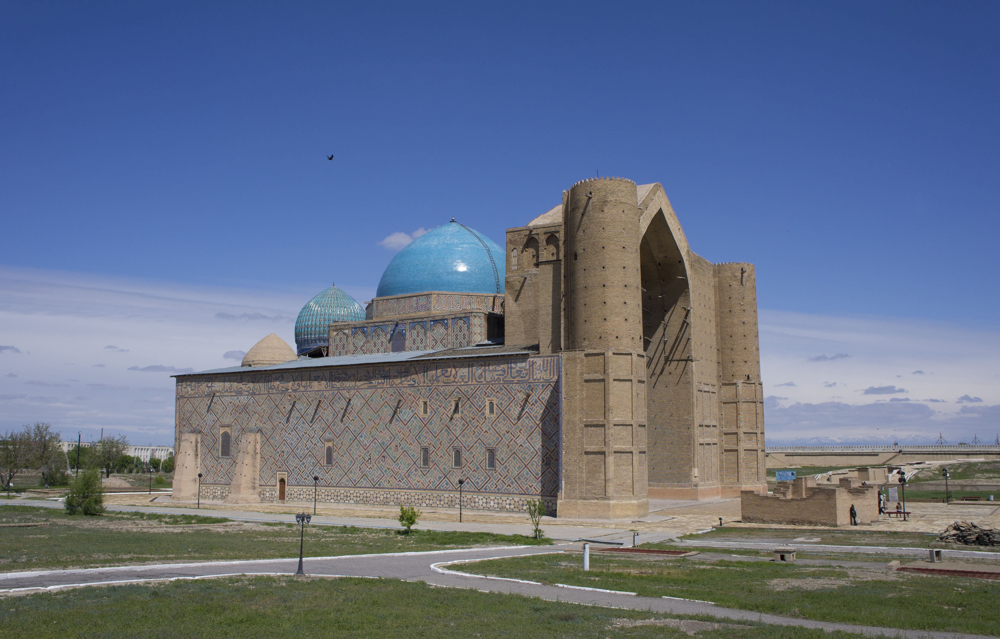

Discover Kazakhstan: From the Caspian Sea to the Altai Peaks
Welcome to the interactive travel guide to Kazakhstan, the world's ninth-largest country. Click any region on the map below to inspect its landmarks and travel highlights, then jump into that city's dedicated guide—starting with our capital, Astana!
Republic of Kazakhstan
Select a region on the interactive map below to open its travel guide.
Interactive Map of Kazakhstan
Click any region or city pin on the map to view detailed information on the right. Click Astana to preview the capital and jump directly to the full Astana website.
Kazakhstan in Numbers
Largest country in the world
Vast steppe, mountains & lakes
Citizens welcoming travelers
Year Astana became the capital
Explore Destinations Step by Step
We are expanding our travel portal across every region of Kazakhstan. Start with our complete Astana guide today!

Astana & Akmola Region
Full city guide featuring Astana's 14 searchable landmarks, interactive photo galleries, and guided tour bookings.

Almaty & Zhetysu
Snow-capped Tian Shan peaks, Shymbulak ski resort, Charyn Canyon, and the alpine Kolsai & Kaindy Lakes.

Turkistan & Silk Road South
UNESCO-listed Mausoleum of Khoja Ahmed Yasawi, ancient Otrar ruins, and vibrant southern bazaars.